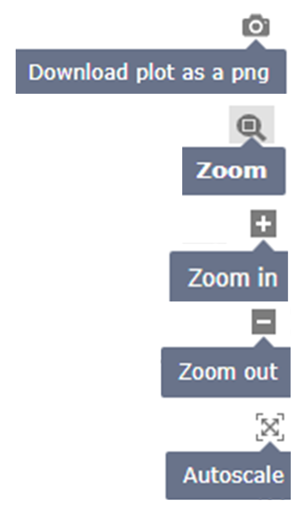

- The search option is available on the homepage. Users can search with a gene symbol or UniProt accession ID, which provides information about mutations, expressional variation, pathways, and associated diseases with source identifiers in output pages.
-
The browse option allows users to access the data in five ways: 1) Gene symbol,
2) Pathway name, 3) Disease category name, 4) Disease category-wise MPE gene expression
Heatmap, and 5) Disease category pairwise comparison of MPE gene expression heatmap.

There are a few buttons to modify the heatmap.

© 2024 Bose Institute. All rights reserved. For queries, please contact Dr. Sudipto Saha (ssaha4@jcbose.ac.in, ssaha4@gmail.com).